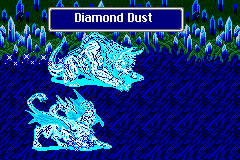
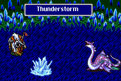

Summon
อาชีพ "Summon" สามารถเรียกสัตว์อสูรออกมาโจมตีได้
Chocobo

MP 4
Skill : Chocobo Kick
Physical Attack / Single
หาได้จาก : ร้านขายเวทย์มนต์ ในหมู่บ้าน Walz
Chocobo Fat
MP 4
Skill : Fat Chocobo
Physical Attack / All
หาได้จาก : ร้านขายเวทย์มนต์ ในหมู่บ้าน Walz
* Note : จะออกมาแบบสุ่ม เมื่อเรียก Chocobo
Sylph

MP 8
Skill : Whispering Wind
Drains Single enemy HP and gives it to all allies
ดูด HP จากศัตรู 1 ตัว มาฟื้นฟู HP ให้แก่สมาชิกในกลุ่ม
หาได้จาก : ร้านขายเวทย์มนต์ ในหมู่บ้าน Walz
Remora
MP 2
Skill : Latch On (Flying Piranha)
Paralyzes Single enemy and slowly reduces their HP
ทำให้ศํตรูติดสถานะ "เหน็บชา" ไม่สามารถโจมตีได้ และ HP
ค่อยๆ ลดลง
หาได้จาก : ร้านขายเวทย์มนต์ ในหมู่บ้าน Walz
Shiva

MP 10
Skill : Diamond Dust
Ice
Elemental Attack / All
หาได้จาก : Side-Quest "Shiva"
จากปราสาท Walz
Ramuh
MP 12
Skill : Bolt of Judgement
Linghtning
Elemental Attack / All
หาได้จาก : Side-Quest "Ramuh"
จากป่า ใกล้หมู่บ้าน Istory
Ifrit
MP 11
Skill : Hellfire
Fire Elemental Attack / All
หาได้จาก : ตามเนื้อเรื่อง ในห้องสมุด Ancient Library
Titan
MP 25
Skill : Rage of the Earth (Earth Fury)
Earth
Elemental Attack / All
หาได้จาก : ตามเนื้อเรื่อง ตอนที่รวบรวมพลังของอุกาบาต ที่ Karnak
Golem
MP 18
Skill : Earth Wall
Protects Party Members from physical attacks / All
Golem คอยปกป้องการโจมตีทางกายภาพ ชั่วระยะเวลาหนึ่ง
หาได้จาก : ตามเนื้อเรื่อง ขณะค้นหาหญ้ามังกร
ในหุบเขามังกร (Galuf World)
Shoat
MP 33
Skill : Demon's Eye
Cast "Break" / Sigle Enemy
ทำให้ศัตรู 1 ตัว ติดสถานะ "หิน" ไม่สามารถต่อสู้ได้ (ตาย)
หาได้จาก : Side-Quest "Shoat"
ในป่า ใกล้ๆ กับป่า Chocobo (Galuf World)
Cabuncle
MP 45
Skill : Ruby Light
Cast "Reflect" / All Members
หาได้จาก : ตามเนื้อเรื่อง ตอนบุกปราสาท
Exdeath (Galuf World)
Syldra (Hydra)

MP 32
Skill : Thunderstorm
Lightning
and Ice Elemental Attack / All
หาได้จาก : Side-Quest "Syldra"
ในถ้ำโจรสลัด (Real World)
Odin
MP 48
Skill : True Edge (Veng Sword)
Instant Death Attack / All
"ตัด" ศัตรูทุกตัว มีผลทำให้ศัตรูตาย
หาได้จาก : Side-Quest "Odin"
ภายในปราสาท Bal ต้องผ่านทางถ้ำ Jacole
Odin
MP 48
Skill : Gungnir
Physical Attack /Single (ในกรณีที่ Odin ไม่สามารถ "ตัด"
ศัตรูได้ จะใช้ Skill นี้แทน)
หาได้จาก : Side-Quest "Odin"
ภายในปราสาท Bal ต้องผ่านทางถ้ำ Jacole
Phoenix
MP 99
Skill : Fire of Resurrection (Phoenix
Flame)
Fire Elemental Attack / All
Revive Deceased 1 Party Member
โจมตีศัตรูด้วยไฟ และชุบชีวิตตัวละครที่ตายไป 1 ตัว
หาได้จาก : Side-Quest "Phoenix"
จากหอคอย Phoenix (Real World)
โดยการขี่ Black Chocobo ไปลงยังป่ากลางทะเลทราย
Leviathan
MP 39
Skill : Big Wave (Tidal Wave)
Water Elemental Attack / All
หาได้จาก : ตามเนื้อเรื่อง ตอนไป ค้นหาแผ่นจารึก
ที่น้ำตก Istory
Bahamut
MP 56
Skill : Mega Flare
Non-Elemental Attack / All
หาได้จาก : Side-Quest "Bahamut"
จากหอคอย Phoenix (Real World)
โดยการขี่ Black Chocobo ไปลงยังป่ากลางทะเลทราย